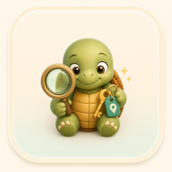
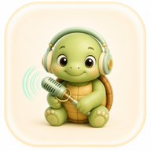
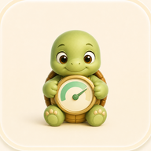

欢迎来到我的数字空间 |
向下滚动
你好！我是一只热爱编程的小乌龟。
我喜欢探索新技术，创造有趣的数字体验。在这个小窝里，你可以看到我的项目、技能和想法。
我相信代码可以改变世界，就像乌龟一样，虽然慢但稳扎稳打，一步一个脚印地前进。
别的我都不会，但 Vibe Coding 够用了 🐢
今天打通了一个工作流，opencode 上开发（vibe）网页，自动推到 GitHub 上，cloudflare 上部署的网页连接 GitHub 仓库，实现自动部署修改的内容。
— 2026-04-30
小龟系列 App：给自己日常用的小工具，一只小龟解决一个具体问题。


Hz
¥以后的桌面操作系统可能都会在底层深入安装一个 AI Agent，甚至在操作系统安装完的配置引导页面，就可以配置这个 Agent 的模型。默认模型应该是有免费额度的，也可以自己定义 API，然后一进入系统就可以用这个 Agent 做各种系统的安装设置了。
现在我新装一个 Linux 系统，第一件事就是安装一个 Agent，比如说 Hermes 或者 opencode，让他来为我配置 Linux 系统中的东西。
— 2026-04-30
4438520@gmail.com